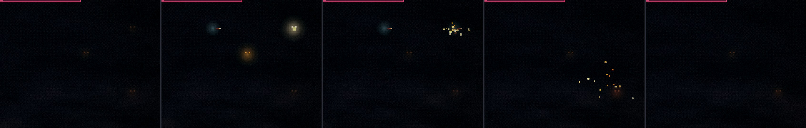
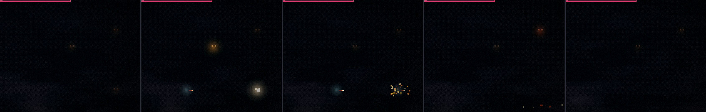

26/11, a 3ª rodada. As fotos saíram do jogo rodando, com a nave atirando de verdade (a tecla de tiro segurada).
Colunas: as três acesas · o 1º acerto (a brasa pisca) · o estouro · as faíscas caindo · meio segundo depois.


Uma coisa que o teste mostrou: na 2ª figura (ela no teto, à esquerda), as duas brasas ficam atrás dela, na mesma linha. Como a nave só atira para a frente, o tiro mirado na brasa acerta ela primeiro. Nas figuras 1 e 3 cada brasa tem a própria linha. Deixei assim: nessa figura quem atira "na isca" acaba achando a verdadeira. Se preferir, dá para afastar as brasas da linha dela.
Ele existia (predador.morte), mas os cinco estouros de carne em volume cheio, o laço dos sussurros e a subida da saída caíam em cima do começo dele: medido, o urro somava só 0 a 2 dB ao que se ouvia. Agora o urro abre sozinho: os estouros ficaram por baixo, o laço cala no golpe, a saída dos sussurros entra em 0,9 s e a trilha só abre depois dele (1,9 s). Medido: +7 a +16 dB acima do resto, também num alto-falante de notebook. Você já ouviu e aprovou.
+2 dB (1,4 → 1,75), "pouca coisa".
| O quê | Onde |
|---|---|
| Atirar numa brasa: o pisca, o estouro e as faíscas caindo leem bem? 3 tiros está bom? | ?fase=besta3 |
| A 2ª figura: tudo bem as brasas atrás dela, ou afasto? | ?fase=besta3 |